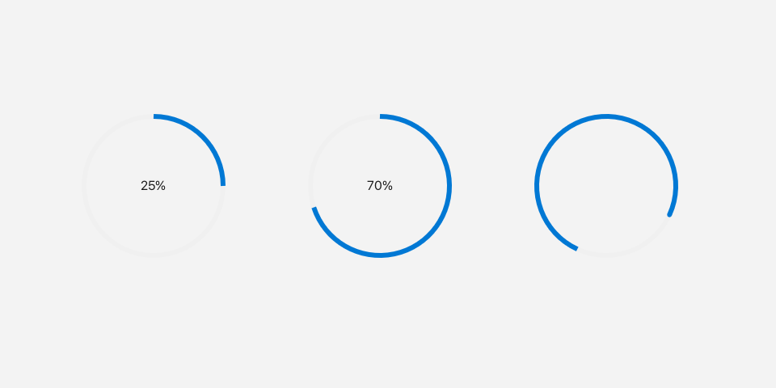

ProgressRing
A ProgressRing shows progress as a circular ring, either filling in
proportion to a value or spinning to show that work is happening.

Determinate rings and an indeterminate spinner.
What it's for
Use a ProgressRing when you need a compact, non-interactive indicator. It is
purely informational: the user cannot click or drag it.
There are two modes. In determinate mode the ring fills clockwise in proportion
to a value between 0 and 1, and a percentage label appears in the center.
In indeterminate mode the ring draws a rotating arc instead, which is useful
when you do not know how long the work will take.
A first example
A window is the operating-system window your app draws into. Window::open
creates it, and if (!win) stops the program if the window could not be opened.
win.add<T>(...) creates a widget inside that window and returns a
reference to it. Rect{x, y, width, height} places the widget.
#include <fluffy/fluffy.hpp>
int main() {
fluffy::Window win = fluffy::Window::open("ProgressRing demo", 640, 400);
if (!win) return 1;
auto& p1 = win.add<fluffy::ProgressRing>(fluffy::Rect{40, 40, 48, 48}, -1.0f);
auto& p2 = win.add<fluffy::ProgressRing>(fluffy::Rect{100, 40, 48, 48}, 0.65f);
win.run();
}
The second constructor argument is the initial value. A negative value such as
-1.0f gives an indeterminate spinner; a value from 0 to 1 gives
determinate progress. Here p2 shows 65%.
The snippets below assume win, p1, and p2 from this example.
Common tasks
Switching modes
p1.setValue(0.5f);
p1.setIndeterminate(true);
setValue maps values below -0.5 to -1 and clamps the rest to [0, 1].
setIndeterminate(false) resets the value to 0.0 and returns to determinate
mode.
Checking the current value
float v = p1.value();
bool ind = p1.value() < 0;
A value() below 0 means the ring is indeterminate; there is no
isIndeterminate() getter.
Loading from YAML
Fluffy can also describe widgets in YAML, a plain text format:
ProgressRing:
value: 0.5
indeterminate: false
x: 40
y: 40
width: 48
height: 48
Good to know
- The constructor default is
-1.0f, so aProgressRingstarts as an indeterminate spinner unless you pass a value. ProgressRinghas no events.
Quick reference
Properties
| Property | Type | Description |
|---|---|---|
value |
float |
value() < 0 = indeterminate (constructor default -1.0f), otherwise 0..1. setValue maps below -0.5 to -1 and clamps the rest to [0,1]; setIndeterminate(false) resets to 0.0. |
Methods
auto& p1 = win.add<fluffy::ProgressRing>(fluffy::Rect{40, 40, 48, 48}, -1.0f);
auto& p2 = win.add<fluffy::ProgressRing>(fluffy::Rect{100, 40, 48, 48}, 0.65f);
p1.setValue(0.5f);
p1.setIndeterminate(true);
float v = p1.value();
bool ind = p1.value() < 0;
Events
None.
See also
- Slider — interactive progress.